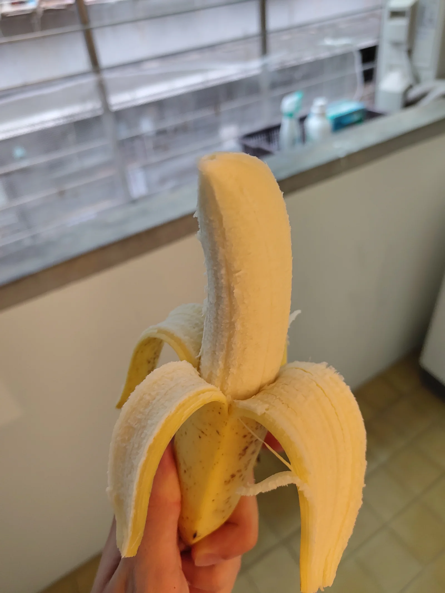

6 September 2026

Continuing on the fruit theme from yesterday, we have the humble banana. But this is no “ordinary” banana, for they are of an entirely different variety from practically all other bananas sold in the world. Before the 1950s, the primary cultivar of commercial banana production was the Gros Michel, until the inevitable result of monocultural cloning — commercial bananas are seedless — occurred. A fungal infection specifically targeting the Gros Michel made it impossible to grow at large scales, and so the industry shifted to the Cavendish cultivar instead, the one you will find in your supermarket today.
But the cavendish is also cloned, and a similar fungal disease targeting the cavendish is inevitable. In fact, it has already appeared, an it first did so on Taiwan. For that reason the Taiwan Banana Research Institute has long been looking for new types that can be grown in the affected soils of Taiwan. The scale of production is however so small that it does not significantly impact the global market — most Taiwanese banana exports seem to go to Japan — and so the only place you are likely to find these strains is in Taiwan itself.
Tastes quite good, although the tend to be a little bit smaller than the cavendish.